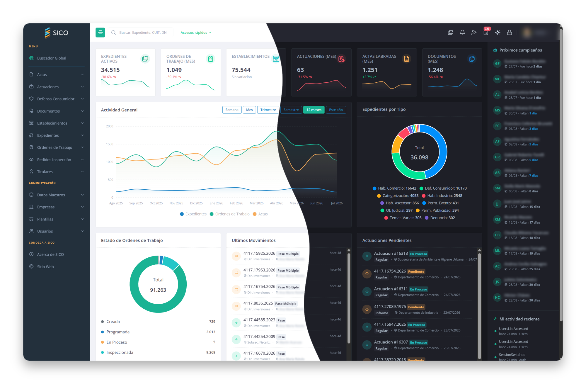

Plataforma completa para una gestión municipal moderna y segura. Administre Expedientes, Actas de Inspección, Inspecciones, Documentos, Actuaciones, Establecimientos y más desde una única solución integrada con aplicación móvil nativa construida con tecnología de vanguardia.

SICO es un sistema integral diseñado específicamente para modernizar y optimizar la gestión de trámites municipales. Desarrollado con tecnología NET 10, SQL Server y .NET MAUI, ofrece una plataforma robusta, escalable y segura con aplicación móvil nativa.
Toda la información municipal en un solo lugar accesible y organizado
Arquitectura optimizada para respuestas rápidas y eficientes
Control de acceso basado en roles y auditoría completa
Acceso desde cualquier dispositivo y desde cualquier lugar
SICO integra todos los módulos necesarios para una administración municipal eficiente
Gestión completa de expedientes municipales con seguimiento de estados y tipos configurables.
Registro y seguimiento de actas de inspección municipal.
Gestión de plazos otorgados con seguimiento automático de vencimientos.
Sistema de gestión documental con soporte para múltiples formatos.
Emisión y seguimiento de órdenes de trabajo e inspección.
Registro unificado de profesionales y gestores con múltiples especialidades.
Gestión de establecimientos comerciales e industriales con datos completos.
Registro cronológico de movimientos de expedientes entre áreas municipales.
Módulo especializado para gestión de reclamos y trámites de defensa del consumidor.
Aplicación móvil nativa para inspectores con soporte offline, GPS y autenticación biométrica.
Funcionalidades avanzadas para optimizar la gestión municipal
Filtros poderosos para encontrar expedientes rápidamente
Vea PDFs y documentos sin descargar
Sistema de roles y permisos granular
Registro de todas las acciones del usuario
Alertas para vencimientos y eventos
Dashboards y estadísticas detalladas
Catálogos personalizables
Vinculación automática de expedientes
Arquitectura API-first que permite integración con otros sistemas y desarrollo de aplicaciones móviles. Todas las funcionalidades disponibles vía API.
Aplicación móvil para inspectores con modo offline, captura GPS, cámara y autenticación biométrica. Sincronización automática cuando hay conectividad.
Migre fácilmente desde sistemas anteriores. Soporte para importación masiva de documentos y registros históricos.
Generación automática de documentos PDF con códigos QR integrados para verificación y trazabilidad de actas, órdenes y expedientes.
Nuestro equipo está disponible para responder sus consultas sobre SICO